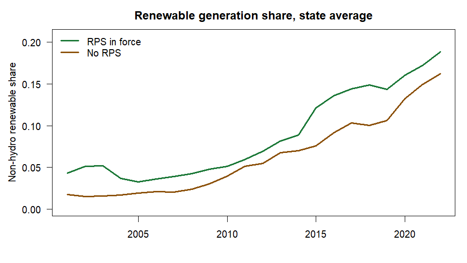
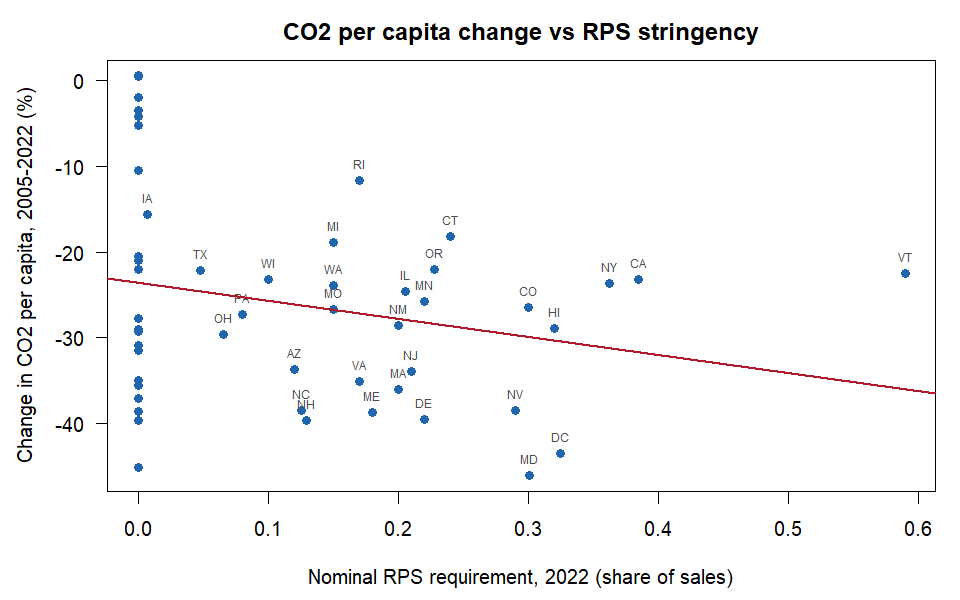
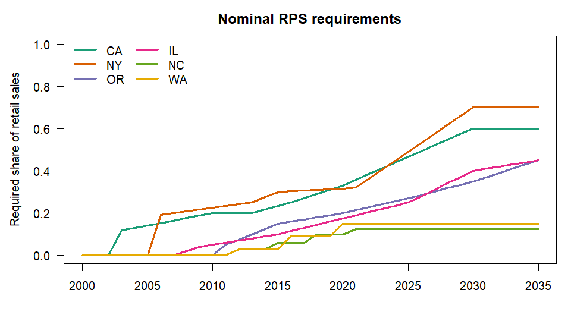

rpspanel gives researchers a documented, reproducible US state-by-year energy-economy panel (50 states + DC), with Renewable Portfolio Standard (RPS) stringency measures, in a few lines of R.
-
One call, one panel.
build_panel()merges EIA energy use, prices and production (SEDS), electricity generation and retail sales, state CO2 emissions, and BEA GDP, income and population. -
Reproducible. Every variable’s source, vintage and transformation is recorded;
codebook()andcite_sources()document the panel. Downloads are cached so vintages stay pinned. -
Better policy measures.
rps_stringency()returns adoption, nominal, coverage-adjusted and incremental (Yin and Powers 2010) requirements, plus design-flexibility indicators. -
Fits existing tools.
as_pdata()hands the panel toplm,fixestorcsdm;export_panel()writes CSV, Stata or Parquet.
Documentation: https://adebayomoses.github.io/rpspanel/
Why rpspanel?
Studies of how US state energy policy affects growth and emissions usually rebuild the same state-by-year dataset by hand. Energy use and prices come from the EIA, GDP and population from the BEA, emissions from the EIA’s state CO2 data and renewable policy rules from DSIRE or Berkeley Lab. Each source has its own format, units, state codes and release schedule, and the cleaning code is rarely published. Renewable Portfolio Standards are also often reduced to a yes/no dummy, although real policies differ in targets, timelines, coverage and flexibility.
rpspanel addresses both problems: one function returns the merged panel with a codebook and the vintage of every source, and rps_stringency() turns hand-coded, source-cited rules for all 50 states and DC into standardised annual stringency measures.
Related software
Several R packages give access to one of the underlying APIs: eia and EIAapi for EIA data, bea.R for BEA data, and tidycensus and censusapi for Census data. They return each source in its own format. rpspanel differs in that it harmonises these sources into a single documented state-year panel and adds RPS stringency measures, which none of them provide. In Python, the PUDL project publishes machine-readable RPS and clean energy standard data; rpspanel brings comparable policy measures to R together with the economic and energy variables needed for panel analysis, and hands the result to plm, fixest and csdm rather than re-implementing estimators.
Installation
Install the released version from CRAN:
install.packages("rpspanel")or the development version from r-universe:
install.packages("rpspanel",
repos = c("https://adebayomoses.r-universe.dev", "https://cloud.r-project.org"))API keys
Register for free keys at https://www.eia.gov/opendata/register.php and https://apps.bea.gov/API/signup/, then add them to .Renviron:
Live example
Everything below is real output, produced by knitting this README against the live EIA and BEA APIs (28 October 2026).
One call builds the whole panel
library(rpspanel)
t0 <- Sys.time()
panel <- build_panel(years = 2001:2022)
#> Fetching eia_seds (9 series)
#> Fetching eia_generation (10 series)
#> Fetching eia_retail_sales (2 series)
#> Fetching eia_co2 (6 series)
#> Fetching bea_regional (6 series)
#> Fetching bea_nipa (1 series)
Sys.time() - t0
#> Time difference of 14.11745 secs
dim(panel)
#> [1] 1122 56
names(panel)
#> [1] "state" "state_name" "fips"
#> [4] "year" "energy_cons_total" "energy_cons_res"
#> [7] "energy_cons_com" "energy_cons_ind" "energy_cons_trans"
#> [10] "energy_prod_total" "renew_cons_total" "energy_price_avg"
#> [13] "energy_expend_total" "gen_total" "gen_coal"
#> [16] "gen_gas" "gen_nuclear" "gen_hydro"
#> [19] "gen_wind" "gen_solar" "gen_geothermal"
#> [22] "gen_wood" "gen_biomass_other" "elec_sales"
#> [25] "elec_price" "co2_total" "co2_elec"
#> [28] "co2_ind" "co2_trans" "co2_res"
#> [31] "co2_com" "gdp_real" "gdp_real_manuf"
#> [34] "gdp_nominal" "personal_income" "population"
#> [37] "income_pc" "gdp_deflator" "gen_renew_nonhydro"
#> [40] "re_share_nonhydro" "re_share_total" "elec_price_real"
#> [43] "energy_price_real" "energy_cons_pc" "energy_intensity"
#> [46] "co2_pc" "co2_intensity" "gdp_real_pc"
#> [49] "rps_adoption" "rps_nominal" "rps_coverage_adj"
#> [52] "rps_incremental" "rps_baseline_share" "rps_oos_rec"
#> [55] "rps_carveout" "rps_acp"
print(panel[panel$state == "CA" & panel$year >= 2018,
c("state", "year", "energy_cons_total", "gen_total", "re_share_nonhydro",
"co2_total", "gdp_real", "population", "rps_nominal")])
#> <rps_panel>: 1 state x 2018-2022 (5 rows), 7 variables
#> state year energy_cons_total gen_total re_share_nonhydro co2_total gdp_real
#> 106 CA 2018 7294353 195465.6 0.2999626 356.6808 2850609
#> 107 CA 2019 7232052 201784.2 0.2920013 356.5132 2969066
#> 108 CA 2020 6433619 193083.5 0.3152571 301.9630 2933002
#> 109 CA 2021 6778817 197165.1 0.3377095 324.0795 3167936
#> 110 CA 2022 6857539 203383.9 0.3437623 326.2054 3161153
#> population rps_nominal
#> 106 39535920 0.2900
#> 107 39547995 0.3100
#> 108 39527808 0.3300
#> 109 39152927 0.3575
#> 110 39125347 0.3850The first build downloads every series from the seven sources. After that the data come from the local cache, so the same vintage is used every time until you pass refresh = TRUE.
Where every number comes from
attr(panel, "sources")[c("source", "retrieved")]
#> source retrieved
#> 1 eia_seds 2026-10-28 08:25:27
#> 2 eia_generation 2026-10-28 08:25:28
#> 3 eia_retail_sales 2026-10-28 08:25:28
#> 4 eia_co2 2026-10-28 08:25:29
#> 5 bea_regional 2026-10-28 08:25:31
#> 6 bea_nipa 2026-10-28 08:25:37
#> 7 rps_bundled 0.1.0.9000
head(codebook(panel), 8)
#> variable group label
#> 1 energy_cons_total energy Total energy consumption
#> 2 energy_cons_res energy Residential sector energy consumption
#> 3 energy_cons_com energy Commercial sector energy consumption
#> 4 energy_cons_ind energy Industrial sector energy consumption
#> 5 energy_cons_trans energy Transportation sector energy consumption
#> 6 energy_prod_total energy Total primary energy production
#> 7 renew_cons_total energy Total renewable energy consumption
#> 8 energy_price_avg energy Average price of energy, all sectors (nominal)
#> unit source series transformation
#> 1 billion Btu eia_seds TETCB As published
#> 2 billion Btu eia_seds TERCB As published
#> 3 billion Btu eia_seds TECCB As published
#> 4 billion Btu eia_seds TEICB As published
#> 5 billion Btu eia_seds TEACB As published
#> 6 billion Btu eia_seds TEPRB As published
#> 7 billion Btu eia_seds RETCB As published
#> 8 dollars per million Btu eia_seds TETCD As published
cite_sources(panel)
#> U.S. Energy Information Administration (2026). State Energy Data System (SEDS). <https://www.eia.gov/state/seds/>. Retrieved 2026-10-28 08:25:27 UTC.
#>
#> U.S. Energy Information Administration (2026). Electric Power Operational Data (Forms EIA-923, EIA-906, EIA-920). <https://www.eia.gov/electricity/data/state/>. Retrieved 2026-10-28 08:25:28 UTC.
#>
#> U.S. Energy Information Administration (2026). Electricity Retail Sales (Form EIA-861). <https://www.eia.gov/electricity/data/state/>. Retrieved 2026-10-28 08:25:28 UTC.
#>
#> U.S. Energy Information Administration (2026). State Energy-Related Carbon Dioxide Emissions. <https://www.eia.gov/environment/emissions/state/>. Retrieved 2026-10-28 08:25:29 UTC.
#>
#> U.S. Bureau of Economic Analysis (2026). Regional Economic Accounts (SAGDP, SAINC tables). <https://apps.bea.gov/regional/>. Retrieved 2026-10-28 08:25:31 UTC.
#>
#> U.S. Bureau of Economic Analysis (2026). National Income and Product Accounts, Table 1.1.9. <https://apps.bea.gov/iTable/?reqid=19>. Retrieved 2026-10-28 08:25:37 UTC.
#>
#> rpspanel authors (2026). rpspanel RPS rule coding (bundled). <https://github.com/adebayomoses/rpspanel>. Coding shipped with rpspanel 0.1.0.9000.
#>
#> Adebayo, M. (2026). rpspanel: US state energy-economy panels with renewable portfolio standards. R package version 0.1.0.9000.A first look at the data
snap <- as.data.frame(panel)
snap <- snap[snap$year == 2022 & snap$state %in% c("CA", "TX", "NY", "IA", "WY", "VT"),
c("state", "co2_pc", "re_share_nonhydro", "gdp_real_pc",
"elec_price_real", "rps_nominal")]
print(snap, digits = 3, row.names = FALSE)
#> state co2_pc re_share_nonhydro gdp_real_pc elec_price_real rps_nominal
#> CA 8.34 0.3438 80796 18.92 0.3850
#> IA 22.33 0.6353 63181 8.11 0.0065
#> NY 8.42 0.0658 89492 15.53 0.3622
#> TX 22.01 0.2639 66566 8.61 0.0472
#> VT 8.50 0.4733 54895 14.40 0.5900
#> WY 96.58 0.2150 64183 6.98 0.0000National totals match the published figures (2020: about 4,570 million tonnes of energy-related CO2, 4,010 TWh of net generation, 331.6 million people):
y20 <- panel[panel$year == 2020, ]
c(co2_mt = sum(y20$co2_total), generation_twh = sum(y20$gen_total) / 1000,
population_m = sum(y20$population) / 1e6, real_gdp_tn = sum(y20$gdp_real) / 1e6)
#> co2_mt generation_twh population_m real_gdp_tn
#> 4571.9727 4009.7668 331.5781 20.1624
d <- as.data.frame(panel)
d$group <- ifelse(d$rps_adoption %in% 1, "RPS in force", "No RPS")
avg <- aggregate(re_share_nonhydro ~ year + group, data = d, FUN = mean)
par(mar = c(4, 4.5, 2.5, 1), las = 1)
plot(NA, xlim = range(avg$year), ylim = c(0, max(avg$re_share_nonhydro) * 1.1),
xlab = "", ylab = "Non-hydro renewable share", main = "Renewable generation share, state average")
cols <- c("RPS in force" = "#1b7837", "No RPS" = "#8c510a")
for (g in names(cols)) {
s <- avg[avg$group == g, ]
lines(s$year, s$re_share_nonhydro, col = cols[g], lwd = 3)
}
legend("topleft", names(cols), col = cols, lwd = 3, bty = "n")
w <- merge(d[d$year == 2005, c("state", "co2_pc")],
d[d$year == 2022, c("state", "co2_pc", "rps_nominal")],
by = "state", suffixes = c("_2005", "_2022"))
w$change <- 100 * (w$co2_pc_2022 / w$co2_pc_2005 - 1)
par(mar = c(4.5, 4.5, 2.5, 1), las = 1)
plot(w$rps_nominal, w$change, pch = 19, col = "#2166ac",
xlab = "Nominal RPS requirement, 2022 (share of sales)",
ylab = "Change in CO2 per capita, 2005-2022 (%)",
main = "CO2 per capita change vs RPS stringency")
lab <- w$rps_nominal > 0
text(w$rps_nominal[lab], w$change[lab], w$state[lab], pos = 3, cex = 0.6, col = "grey30")
abline(lm(change ~ rps_nominal, data = w), col = "#b2182b", lwd = 2)
Straight into estimation
library(fixest)
feols(log(co2_pc) ~ rps_nominal + log(gdp_real_pc) | state + year,
data = as_pdata(panel, "fixest"), cluster = ~state)
#> OLS estimation, Dep. Var.: log(co2_pc)
#> Observations: 1,122
#> Fixed-effects: state: 51, year: 22
#> Standard-errors: Clustered (state)
#> Estimate Std. Error t value Pr(>|t|)
#> rps_nominal -0.099899 0.142014 -0.703447 0.485040
#> log(gdp_real_pc) 0.194634 0.111038 1.752866 0.085755 .
#> ---
#> Signif. codes: 0 '***' 0.001 '**' 0.01 '*' 0.05 '.' 0.1 ' ' 1
#> RMSE: 0.065123 Adj. R2: 0.986657
#> Within R2: 0.027186This two-way fixed-effects regression is only an illustration of the workflow, not a causal estimate.
f <- file.path(tempdir(), "us_state_panel.dta")
export_panel(panel, f) # Stata file + us_state_panel_codebook.csv
file.exists(f)
#> [1] TRUERPS stringency (works offline)
The RPS measures come from the coding bundled with the package, so they need no API key:
library(rpspanel)
rps_stringency(c(2010, 2020, 2030), states = c("CA", "WA", "TX"),
method = c("adoption", "nominal"))
#> state year rps_adoption rps_nominal
#> 1 CA 2010 1 0.20
#> 2 CA 2020 1 0.33
#> 3 CA 2030 1 0.60
#> 4 TX 2010 1 NA
#> 5 TX 2020 1 NA
#> 6 TX 2030 0 0.00
#> 7 WA 2010 1 0.00
#> 8 WA 2020 1 0.15
#> 9 WA 2030 1 0.15
s <- rps_stringency(2000:2035, states = c("CA", "NY", "OR", "IL", "NC", "WA"),
method = "nominal")
cols <- c(CA = "#1b9e77", NY = "#d95f02", OR = "#7570b3",
IL = "#e7298a", NC = "#66a61e", WA = "#e6ab02")
par(mar = c(4, 4.5, 2.5, 1), las = 1)
plot(NA, xlim = c(2000, 2035), ylim = c(0, 1), xlab = "",
ylab = "Required share of retail sales", main = "Nominal RPS requirements")
for (st in names(cols)) {
x <- s[s$state == st, ]
lines(x$year, x$rps_nominal, col = cols[st], lwd = 2.5)
}
legend("topleft", names(cols), col = cols, lwd = 2.5, bty = "n", ncol = 2)
Texas shows NA here because its standard is set in megawatts. Passing retail sales (sales =), which build_panel() does automatically, converts Texas’s and Iowa’s targets to a share of covered sales. The conversion assumes a capacity factor (0.33 by default, adjustable with capacity_factor =), so those values are approximate; they agree with Berkeley Lab’s equivalents to within about one percentage point in every year.
Use interpolation = "step" to follow the legal schedule exactly instead of interpolating between target years. See vignette("rps-stringency") for all five methods.
Package layers
| Module | Functions |
|---|---|
| Fetch and cache |
fetch_eia(), fetch_bea(), fetch_census(), fetch_rps(), rps_cache_*()
|
| Harmonise |
harmonise_states(), deflate(), convert_units()
|
| Panel builder | build_panel() |
| RPS stringency |
rps_rules(), rps_stringency()
|
| Documentation |
codebook(), cite_sources()
|
| Helpers |
as_pdata(), export_panel()
|
Status of the RPS coding
The RPS rules bundled in inst/extdata/ code all 50 states and DC: 33 states with a mandatory RPS (including the repealed standards in KS, MT and WV, and the ended or repealed ones in AZ, OH and TX) and 18 without one. The RPS rows and the voluntary-goal rows have been checked against the statutes, DSIRE program pages and the LBNL RPS & CES data (June 2026), and every row cites its sources in the source and notes columns (verified = TRUE for all 51). Nebraska is coded as having no RPS: Berkeley Lab counts the board-adopted clean energy commitments of its public power utilities as a standard from 2040, but they are utility rather than state policies. Corrections are very welcome through GitHub issues.
Data sources
US Energy Information Administration (SEDS, electricity, CO2 emissions), US Bureau of Economic Analysis (Regional and NIPA accounts) and US Census Bureau (ACS). The package downloads data on demand and does not redistribute it.
Citation
To cite rpspanel in publications, use citation("rpspanel"), or cite the Zenodo record, which always points to the latest version: https://doi.org/10.5281/zenodo.23480612.
Contributing
Bug reports, corrections to the RPS coding and other contributions are welcome; see the contributing guide.
Code of Conduct
Please note that the rpspanel project is released with a Contributor Code of Conduct. By contributing to this project, you agree to abide by its terms.